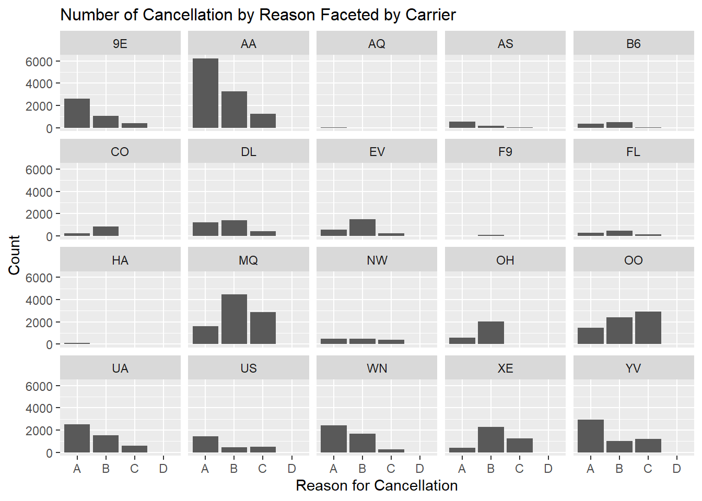
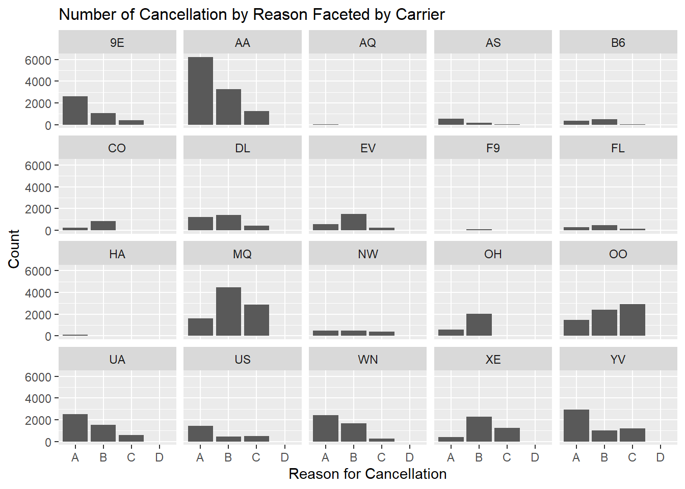
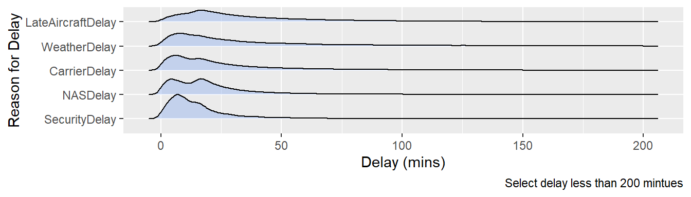
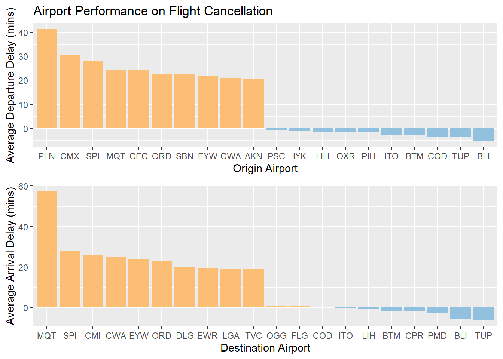

Chapter 5 Results
5.1 Graph1: Most common reason for flight cancellation
A=Carrier Caused, B=Weather, C=National Aviation System, D=Security
 

5.2 Graph2: Cancellation rate vs. number

5.3 Graph3: Number of delay and average delay (in mins)

(draft) The most common reason for flight cancellation is carrier caused, and the weather ranked second. There is not too much difference between the first two. Intuitively, we can avoid cancellation by selecting top carriers or flying in nice weather conditions. In addition, the national aviation system also counts for a part of cancellation but it is only a half of the weather. Security ranked last and there are only x flights canceled due to security out of xx flights.
In contrast, the top 3 reasons for flight delay are the national aviation system, late-arriving aircraft, and carrier caused, which is quite different from cancellation. It is less likely to avoid delay in advance since the top two reasons are not predictable and controllable. However, we can avoid delays by choosing carriers to some extent.
5.4 Graph4: Explore carrier that occure delay most

5.5 Graph5: Average delay of each state (mins)
5.6 Graph6: Depature delay and arrival delay by airport (top10 and bottom10 )

5.7 Graph7: Delay by hour/day of week
5.8 Graph8